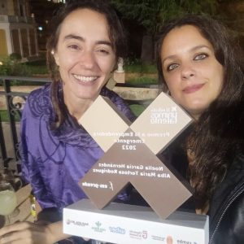
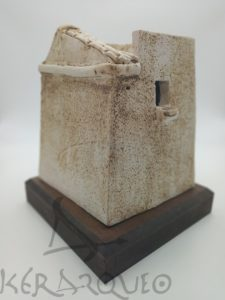

<?xml version="1.0" encoding="UTF-8"?><rss version="2.0"
	xmlns:content="http://purl.org/rss/1.0/modules/content/"
	xmlns:wfw="http://wellformedweb.org/CommentAPI/"
	xmlns:dc="http://purl.org/dc/elements/1.1/"
	xmlns:atom="http://www.w3.org/2005/Atom"
	xmlns:sy="http://purl.org/rss/1.0/modules/syndication/"
	xmlns:slash="http://purl.org/rss/1.0/modules/slash/"
	>

<channel>
	<title>kerarqueo Cerámica Artesanal Granada</title>
	<atom:link href="../feed/" rel="self" type="application/rss+xml" />
	<link>https://www.kerarqueo.com</link>
	<description>Artesanía de Andalucía, réplicas en arqueología y patrimonio. Cerámica hecha a mano en Granada.</description>
	<lastBuildDate>Mon, 10 Oct 2022 18:52:34 +0000</lastBuildDate>
	<language>es</language>
	<sy:updatePeriod>
	hourly	</sy:updatePeriod>
	<sy:updateFrequency>
	1	</sy:updateFrequency>
	<generator>https://wordpress.org/?v=6.1.1</generator>

<image>
	<url>../wp-content/uploads/2019/11/cropped-isotipo-circulo-32x32.png</url>
	<title>kerarqueo Cerámica Artesanal Granada</title>
	<link>https://www.kerarqueo.com</link>
	<width>32</width>
	<height>32</height>
</image> 
	<item>
		<title>Premio a las Emprendedoras Emergentes</title>
		<link>../premio-a-las-emprendedoras-emergentes/?utm_source=rss&#038;utm_medium=rss&#038;utm_campaign=premio-a-las-emprendedoras-emergentes</link>
					<comments>../premio-a-las-emprendedoras-emergentes/#respond</comments>
		
		<dc:creator><![CDATA[noelia]]></dc:creator>
		<pubDate>Mon, 10 Oct 2022 18:46:26 +0000</pubDate>
				<category><![CDATA[novedad]]></category>
		<category><![CDATA[cerámica artesanal]]></category>
		<category><![CDATA[Emergentes]]></category>
		<category><![CDATA[Emprendedoras]]></category>
		<category><![CDATA[Granada]]></category>
		<category><![CDATA[premio]]></category>
		<guid isPermaLink="false">../?p=734</guid>

					<description><![CDATA[Que mejor manera de estrenarme en el blog que para festejar este premio! Soy Noelia, de Kerarqueo, junto a mi compi Alba, aquí en la foto. La verdad es que ha sido toda una sorpresa que nos llamaran de Diputación para comunicarnos que nos concedían, dentro de los Premios al Emprendimiento Femenino, el de Emprendedoras [&#8230;]]]></description>
										<content:encoded><![CDATA[<p></p>
<p>Que mejor manera de estrenarme en el blog que para festejar este premio! Soy Noelia, de Kerarqueo, junto a mi compi Alba, aquí en la foto.</p>
<p>La verdad es que ha sido toda una sorpresa que nos llamaran de Diputación para comunicarnos que nos concedían, dentro de los Premios al Emprendimiento Femenino, el de Emprendedoras Emergentes de Granada. Estamos súper contentas, teniendo en cuenta el arranque que tuvimos en el 2020, con toda la pandemia que se nos vino encima y que por supuesto, ninguno esperábamos. El camino hasta aquí ha estado lleno de fatiguitas, y es que llamar a la puerta de instituciones que no te conocen y pedir que confíen en ti para hacer algo especial no es nada fácil&#8230;</p>
<p>Triste pero cierto es decir que no corren buenos tiempos para la cultura, y plantearse crear una empresa basada en la interpretación del patrimonio a través de la artesanía cerámica es un reto para románticos y soñadores, aderezados con una pizca de locura. Y sin embargo, aquí estamos, dos años después y con un premio bajo el brazo (que mejor pan), solo podemos agradecer a las personas e instituciones que tuvieron a bien elegirnos a nosotras&#8230; (Combo Comunicación, Ayuntamiento y Diputación de Granada, Wibber, Sakata 3D&#8230;) brindamos por ellos, por todas las personas que nos han apoyado y nos apoyan, y por qué no, también por nosotras! Gracias a todos!</p>
<p>&nbsp;</p>
<blockquote class="wp-embedded-content" data-secret="epn2PPYflF"><p><a href="https://www.ahoragranada.com/noticias/los-premios-al-emprendimiento-femenino-de-granada-ya-tienen-ganadoras/">Los Premios al Emprendimiento Femenino de Granada ya tienen ganadoras</a></p></blockquote>
<p><iframe class="wp-embedded-content" sandbox="allow-scripts" security="restricted" title="«Los Premios al Emprendimiento Femenino de Granada ya tienen ganadoras» — Ahora Granada" src="https://www.ahoragranada.com/noticias/los-premios-al-emprendimiento-femenino-de-granada-ya-tienen-ganadoras/embed/#?secret=n5fHzGJc7x#?secret=epn2PPYflF" data-secret="epn2PPYflF" width="600" height="338" frameborder="0" marginwidth="0" marginheight="0" scrolling="no"></iframe></p>
]]></content:encoded>
					
					<wfw:commentRss>../premio-a-las-emprendedoras-emergentes/feed/</wfw:commentRss>
			<slash:comments>0</slash:comments>
		
		
			</item>
		<item>
		<title>Torreon Arabe Las Gabias</title>
		<link>../torreon-arabe-las-gabias/?utm_source=rss&#038;utm_medium=rss&#038;utm_campaign=torreon-arabe-las-gabias</link>
					<comments>../torreon-arabe-las-gabias/#respond</comments>
		
		<dc:creator><![CDATA[alba]]></dc:creator>
		<pubDate>Fri, 05 Mar 2021 09:54:36 +0000</pubDate>
				<category><![CDATA[novedad]]></category>
		<guid isPermaLink="false">../?p=410</guid>

					<description><![CDATA[entrada de blog Torreon Arabe Las Gabias]]></description>
										<content:encoded><![CDATA[<p></p>
<p>entrada de blog Torreon Arabe Las Gabias</p>
]]></content:encoded>
					
					<wfw:commentRss>../torreon-arabe-las-gabias/feed/</wfw:commentRss>
			<slash:comments>0</slash:comments>
		
		
			</item>
	</channel>
</rss>
